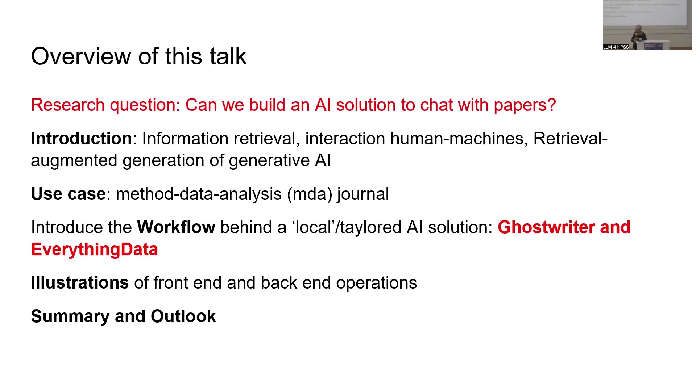
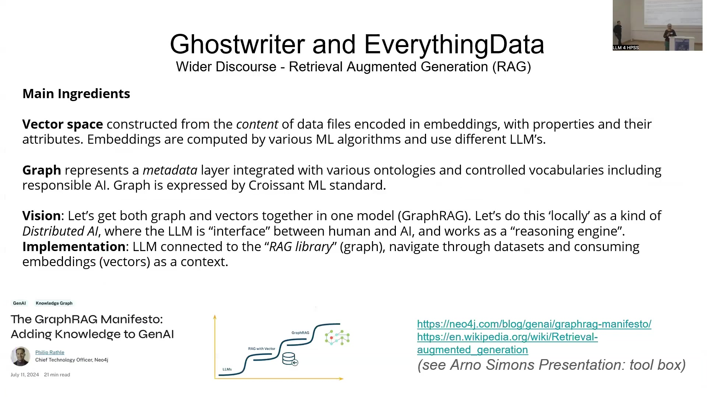
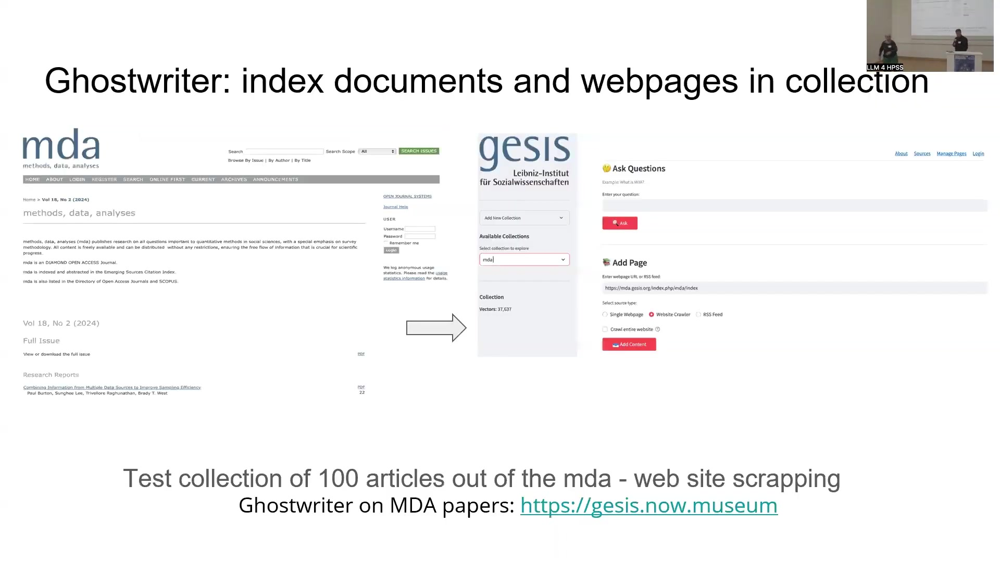
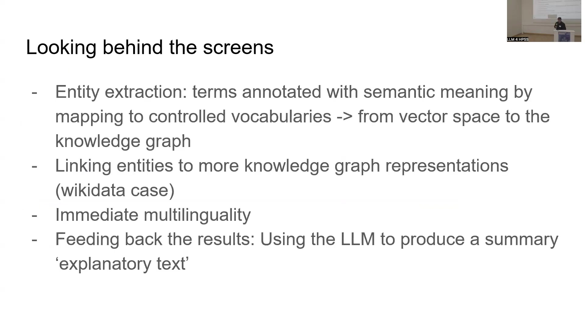
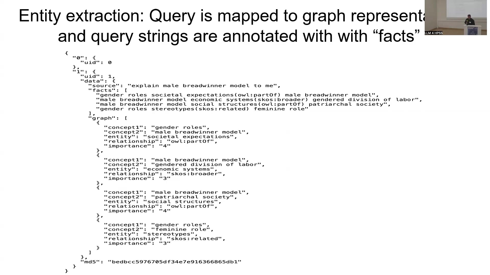
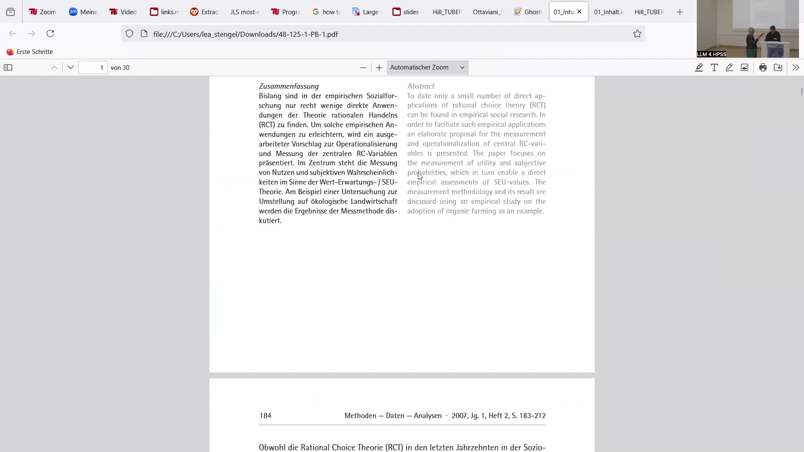

11 Science dynamics and AI
Overview
Researchers at DANS, the data archive of the Royal Netherlands Academy of Arts and Science, in collaboration with GESIS, a research-engaged archive, have pioneered an AI-driven solution to manage the escalating volume of scientific information. This initiative directly addresses the challenges of growth and increasing differentiation within the sciences, which complicate the review, evaluation, and selection of relevant content. A fundamental precondition for creating new knowledge, whether individually or across academia, involves efficiently finding and understanding existing information. Consequently, the project investigates whether contemporary Artificial Intelligence (AI), particularly Large Language Models (LLMs), can support the knowledge production process through advanced information retrieval.
The core research question explores the feasibility of constructing an AI solution capable of facilitating conversational interaction with academic papers from specific collections. Developers have crafted a dual-component system: Ghostwriter, serving as the user interface, and EverythingData, encompassing the comprehensive backend operations. This architecture integrates principles of information retrieval, human-machine interaction, and Retrieval-Augmented Generation (RAG). The project employs the method-data-analysis (mda) journal as a practical use case, demonstrating a ‘local’ and ‘tailored’ AI solution workflow.
The Ghostwriter interface redefines information retrieval by enabling simultaneous interaction with structured data—analogous to a librarian—and natural language—akin to an expert. This approach leverages Knowledge Organisation Systems (KOS) and classification schemes whilst interpreting natural language queries. The underlying technical infrastructure, EverythingData, processes input document collections, such as articles from the mda journal, by ingesting them into a vector store, specifically Qdrant. It performs crucial operations including term extraction, embedding construction, and crucially, coupling these with knowledge graphs. This integration enriches embeddings by contextualising them, thereby adding significant value to the information.
The system prioritises factual accuracy, aiming to prevent hallucinations by relying exclusively on the ingested source material. It segments papers into small, identifiable blocks, employing LLM techniques to intelligently connect and retrieve relevant sections. Knowledge graphs further enhance this process by predicting which text segments will best address specific queries. A key innovation links extracted entities to Wikidata, transforming free strings into multilingual identifiers. This mechanism supports immediate multilinguality, allowing users to query in one language and retrieve information from documents in another. Moreover, decoupling knowledge from the model and storing it as Wikidata identifiers establishes a robust ground truth for benchmarking and validating future AI models. The project envisions this knowledge organisation system as a sustainable future for scientific information management, fostering collaborations with industry leaders like Google and Meta.
11.1 Navigating Scientific Information Overload

This collaborative endeavour, uniting DANS—the data archive of the Royal Netherlands Academy of Arts and Science—with GESIS, an archive actively engaged in research, addresses a critical challenge within contemporary science. The sciences exhibit continuous growth and increasing differentiation, which consequently complicates the processes of reviewing, evaluating, and selecting pertinent information.
A fundamental precondition for generating new knowledge, whether within individual minds or across broader academic communities, necessitates the capacity to locate and comprehend existing information effectively. Therefore, a central research question explores whether advanced AI systems can genuinely support the knowledge production process, specifically focusing on information retrieval.
The project originated from extensive experimentation conducted by Slava Tikhonov, a senior research engineer at DANS, who meticulously constructs complex data pipelines. Rather than simple linear pipelines, these systems represent intricate “backs of things,” as one colleague aptly described, making them challenging to unravel and explain. Consequently, the project aims to illustrate the application of these AI capabilities in a manner accessible to a broader audience. From a wider perspective, this initiative seeks to harness AI’s potential to manage the overwhelming deluge of information in which researchers increasingly find themselves immersed.
11.2 System Architecture and Core Components

A central research question drives this project: can developers construct an AI solution enabling conversational interaction with academic papers drawn from a specific selection? This inquiry integrates several key concepts, including information retrieval, the dynamics of human-machine interaction, and the principles of Retrieval-Augmented Generation (RAG). Researchers have selected the method-data-analysis (mda) journal as a pertinent use case, providing a concrete context for demonstrating the system’s capabilities.
The project introduces a workflow for a ‘local’ or ‘tailored’ AI solution, comprising two primary components. Developers have affectionately named these Ghostwriter, which functions as the user interface, and EverythingData, serving as a comprehensive summary for all underlying backend operations. This chapter will further illustrate both the front-end user experience and the intricate back-end processes, culminating in a summary and outlook on future developments.
11.3 The Ghostwriter Interface: A Novel Retrieval Paradigm

The Ghostwriter approach introduces a novel paradigm for information retrieval, fundamentally altering how users interact with data. This system conceptualises queries across various levels of complexity and data representation.
Initially, a direct query to a single database representation necessitates prior knowledge of its schema and typical values to yield results, akin to a user interacting solely with a database. Progressing beyond this, a query directed at a data collection or space, underpinned by connected structured databases or graphs, prompts the system to suggest similar or improved queries based on schema interconnections, whilst providing a list of potential results. This interaction mirrors a user consulting a librarian.
Further advancing, a query posed to a Large Language Model (LLM) interprets natural language input and generates results, also expressed in natural language. This scenario evokes the experience of engaging with a library or a panel of experts. Crucially, the Ghostwriter system integrates a local LLM with a target data collection, embedding it within a network of additional data interpretation sources accessible via Application Programming Interfaces (APIs). This sophisticated setup generates a family of terms around the query, identifies related structured information, and ultimately returns a comprehensive list of results. This advanced interaction simulates a user simultaneously chatting with both experts and librarians.
Traditionally, information retrieval has grappled with the challenge of formulating the precise query. Whilst Google features and schema.org enable machines to make informed guesses about user queries, these typically operate within a web-based context, not a local interaction. Ghostwriter, however, through its iterative application, empowers users to reformulate their questions, thereby fostering a deeper understanding of their actual intent and the available data space. This innovative interface, drawing on the metaphors of a “librarian”—representing structured data, Knowledge Organisation Systems (KOS), and historical classifications—and an “expert”—embodying natural language—claims to facilitate simultaneous conversational interaction with both.
11.4 Retrieval-Augmented Generation (RAG) Architecture

Scientifically, this project firmly situates itself within the broader discourse surrounding Retrieval-Augmented Generation (RAG). Philip Rattliff’s paper from Neo4j offers a highly recommended introduction to this intricate topic. [CITATION NEEDED for Rattliff’s paper]. The system’s architecture fundamentally relies upon two main ingredients: a vector space and a knowledge graph. Developers construct the vector space from the content of data files, encoding this information into embeddings. Various Machine Learning (ML) algorithms compute these embeddings, employing diverse Large Language Models (LLMs) in the process.
Conversely, the knowledge graph represents a sophisticated metadata layer. Engineers integrate this layer with a range of ontologies and controlled vocabularies, notably incorporating principles of responsible AI. The Croissant ML standard precisely expresses this graph. The overarching vision for this system involves seamlessly combining both graph and vector representations into a unified model, termed GraphRAG. Developers implement this approach ‘locally’, conceptualising it as a form of Distributed AI. Within this framework, the LLM assumes a dual role, functioning both as an interface between human users and the AI, and as a powerful reasoning engine. Operationally, the LLM connects to a ‘RAG library’—the knowledge graph—enabling it to navigate through datasets and consume embeddings, or vectors, as contextual information.
11.5 Operational Workflow: Data Ingestion and Processing

The system initiates its operational workflow by ingesting a collection of articles, specifically those sourced from the method-data-analysis (mda) journal. Developers have scraped a limited number of these articles for the current implementation; however, the architecture accommodates any collection of documents as input. This raw information then enters the EverythingData component, which orchestrates a series of sophisticated operations.
Initially, the system stores this information within a vector store, utilising Qdrant for this purpose. Subsequently, it performs crucial processes, including term extraction and the construction of embeddings. A pivotal aspect of this workflow involves coupling the processed information with knowledge graphs. This integration significantly enhances the value of words, phrases, and embeddings by contextualising them, effectively enriching the overall context. All this meticulously processed data then feeds into a unified vector space, forming the RAG-Graph. The Ghostwriter interface interacts directly with this vector space and its integrated graph. Users formulate questions in natural language, and in response, the system provides both a list of relevant documents and a concise summary text, reflecting its understanding of the query.
11.6 Ghostwriter Implementation: Preventing Hallucinations

The developer, whilst having engaged with early iterations of LLMs such as GPT-2 in 2020, expresses a nuanced perspective, focusing instead on deconstructing and repurposing their training processes. This work, initially conceived for academic papers, demonstrates remarkable versatility, extending its application to any web content or even spreadsheets, enabling users to query specific values.
A cornerstone of its design lies in its robust mechanism for preventing hallucinations: the system exclusively draws information from the provided source material. Consequently, if a query pertains to information absent from the ingested data, the system transparently responds with “I don’t know.”
Notably, this implementation employs a relatively simple 1 billion parameter LLM, yet it effectively addresses complex questions through the strategic integration of knowledge graphs. For instance, papers from the mda, a GESIS journal, have been ingested into Ghostwriter, forming a distinct collection. A core principle guiding this system dictates that it does not rely on any knowledge pre-ingested into the LLM. Instead, its explicit goal is to furnish only factual information directly present within the specific paper under scrutiny.
11.7 Ghostwriter in Practice: Querying and Refinement

Demonstrating its capabilities, the system processes a query such as “explain male breadwinner model to me,” providing a comprehensive explanation of the concept. Crucially, it accompanies this explanation with a detailed list of references, each entry specifying a chat number, article title, direct URL, and a relevance score. This meticulous referencing ensures the system’s output remains grounded in verifiable sources, effectively preventing hallucinations by precisely identifying where information originates.
Internally, the system operates by segmenting each paper into small, distinct blocks, assigning a unique identifier to every block. It then employs sophisticated LLM techniques to intelligently connect and retrieve these blocks, applying weights and leveraging knowledge graphs to predict which text segments will most accurately respond to a given question. This iterative approach is evident when a refined query, for instance, “explain how data was collected on male breadwinner model,” yields a response indicating “no direct information” if the content is not present within the ingested papers. Furthermore, a user-friendly “Add paper” button empowers users to contribute new articles, seamlessly integrating fresh content for subsequent queries.
11.8 Underlying Architecture: Entity Extraction and Multilingual Capabilities

The system’s robust underlying architecture comprises several interconnected components: entity extraction, knowledge graph linking, multilinguality support, and summary generation. An entity extraction pipeline meticulously annotates terms with semantic meaning, mapping them to controlled vocabularies and thereby transitioning information from the vector space into the knowledge graph. This process extends to linking extracted entities to broader knowledge graph representations, notably Wikidata. Knowledge graphs assume critical importance, serving as a “ground truth” against which the accuracy of LLM-generated answers can be rigorously validated.
Furthermore, the system incorporates immediate multilinguality support, a vital feature enabling it to process papers in diverse languages, such as Chinese or German, whilst responding to queries posed in English. Ultimately, the LLM synthesises these disparate pieces of text to produce the final results, including summary or explanatory content.
The fact extraction process begins by segmenting the user’s query into smaller components, which are then mapped to a Knowledge Organisation System (KOS). This KOS possesses the unique characteristic of iteratively generating new levels of terms, enriching the semantic understanding.
Crucially, the system links these extracted entities to Wikidata, transforming free strings into unique identifiers. These identifiers, in turn, connect to multilingual translations, providing comprehensive properties that facilitate cross-language comprehension. For instance, the core concept of a query, such as “bread winner mo,” can be translated by LLM/Gemma3 into hundreds of languages. This mechanism establishes a robust ground truth by decoupling knowledge from both questions and papers, storing it externally as Wikidata identifiers. Consequently, researchers can benchmark different models by testing them against the same list of identifiers, precisely assessing their suitability and identifying any inaccuracies. The project’s proponents envision the Knowledge Organisation System as the future of sustainable information management, actively pursuing collaborations with industry leaders like Google and Meta to realise this vision.
11.9 Live Demonstration: Engaging with Ghostwriter

A live demonstration showcased the Ghostwriter interface, accessible via the GESIS Leibniz-Institut für Sozialwissenschaften website, specifically within its “Ask Questions” section. Users interact with an input field labelled “Enter your question:”, submitting queries via a prominent red “Ask” button. The system also provides collection management functionalities, including an “Add New Collection” dropdown and an “Available Collections” section, where the mda (Methods, Data, Analyses) journal collection was selected, indicating “Vectors 37,637” as its size.
During the demonstration, a query for “Rational Choice Theory” yielded a concise summary compiled from various papers, accompanied by precise references detailing titles, URLs, and relevance scores. A subsequent, more specific query, “explain utility in Rational Choice Theory,” prompted the system to select distinct pieces of information, presenting varied results whilst consistently pointing to the same foundational papers. An available Application Programming Interface (API) further extends the system’s utility, enabling an automatic mode for agentic architectures, which can collect results and identify new knowledge. Users can also expand the system’s knowledge base via an “Add Page” section, allowing the input of webpage URLs or RSS feeds, with options for single webpages, website crawling, or RSS feed integration. Notably, the demonstration highlighted the system’s robust multilingual capabilities: a query posed in English successfully retrieved and processed information from a source paper written entirely in German, save for its abstract.
11.10 Project Vision and Future Trajectories
This project champions a key benefit: the provision of local control and cost-effectiveness, contrasting sharply with the reliance on large, external AI models. The interaction with the system is conceptualised as conversing with an “invisible college,” a dynamic exchange designed to provoke human thinking and assist in formulating precise research questions. Crucially, the AI’s role remains one of support for the human thought process; it does not aim to furnish ultimate factual answers or to independently formulate research questions for its users.
From a strategic perspective, the project explicitly avoids a business model centred on developing and selling software. Instead, it prioritises collaborative engagements, particularly with partners who present concrete research questions. The team actively seeks resources to facilitate initial try-outs, intending thereafter to hand over the developed solutions to collaborators. This handover model empowers partners to further tinker with, validate, and polish the systems, fostering a sustainable ecosystem for scientific inquiry. The project’s key contributions lie in demonstrating a practical, localised RAG solution for scientific information management, emphasising factual accuracy, multilingual capabilities, and a robust knowledge organisation framework.